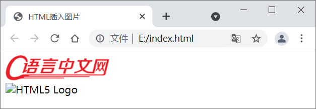

HTML插入图片：<img>标签
一图胜千言，图片比文字更具表现力，恰当地使用图片可以让网页更加精美。
HTML 使用 <img> 标签插入图片，img 是 image 的简称。<img> 是自闭和标签，只包含属性，没有结束标签。<img> 标签的语法格式如下：
【示例】使用 <img> 标签插入图片：
可以看到，图片 html5.png 不存在，加载失败，此时显示出 alt 属性中的文本信息。
在 <picture> 标签中包含零个或多个 <source> 标签，通过 <source> 标签中的 media 属性可以设定匹配条件（允许哪个版本的图片显示），通过 srcset 属性可以定义图片的路径。另外，在 <picture> 标签的最后还需要定义一个 <img> 标签。如下例所示：
下面通过示例来演示一下：
假如定义一个矩形的可点击区域，示例代码如下：
假如定义一个圆形的可点击区域，示例代码如下：
假如定义一个多边形的可点击区域，示例代码如下：
HTML 使用 <img> 标签插入图片，img 是 image 的简称。<img> 是自闭和标签，只包含属性，没有结束标签。<img> 标签的语法格式如下：
<img src="url" alt="text">
对属性的说明：- src 是必选属性，它是 source 的简称，用来指明图片的地址或者路径。src 支持多种图片格式，比如 jpg、png、gif 等。src 可以使用相对路径，也可以使用绝对路径。
- alt 是可选属性，用来定义图片的文字描述信息。当由于某些原因（例如图片路径错误、网络连接失败）导致图片无法加载时，就会显示 alt 属性中的信息。
【示例】使用 <img> 标签插入图片：
<!DOCTYPE html>
<html lang="en">
<head>
<meta charset="UTF-8">
<title>HTML插入图片</title>
</head>
<body>
<!-- 使用绝对路径插入网络图片 -->
<img src="http://c.biancheng.net/cpp/templets/new/images/logo.jpg?v=3.994" alt="C语言中文网Logo"> <br>
<!-- 在当前 HTML 文档的上层目录中有一个 images 文件夹，该文件夹下有一张图片 html5.png -->
<img src="../images/html5.png" alt="HTML5 Logo">
</body>
</html>
显示效果：

图1：HTML 插入图片示例
图1：HTML 插入图片示例
可以看到，图片 html5.png 不存在，加载失败，此时显示出 alt 属性中的文本信息。
设置图片的宽度和高度
在 <img> 标签中可以使用 width 和 height 属性来指定图片的宽度和高度。默认情况下，这些属性的值都是以像素为单位的。<img src="./logo.gif" alt="C语言中文网Logo" width="150" height="150"> <img src="./html5.png" alt="HTML5 Logo" width="100" height="100">除此之外，您也可以使用 style 属性指定图片的宽度和高度，如下所示：
<img src="./logo.gif" alt="C语言中文网Logo" style="width: 100px; height: 100px;"> <img src="./html5.png" alt="HTML5 Logo" style="width: 150px; height: 150px;">
注意，width 和 height 属性只是临时修改图片的尺寸，并不会改变图片原始文件的大小。
关于 width 和 height 属性的两点建议：- 一般建议为图片设置 width 和 height 属性，以便浏览器可以在加载图片之前为其分配足够的空间，否则图片加载过程中可能会导致您的网站布局失真或闪烁。
- 如果您的页面使用响应式布局（自适应布局），建议在上传图片之前裁剪好尺寸，而不要设置 width 和 height 属性，这样图片能够跟随屏幕宽度自动改变尺寸，从而不会变形，或者超出屏幕宽度。
HTML5 中的图片属性
有时我们需要按照比例来放大或缩小图片的尺寸以适应不同的设备，避免图片过大超出屏幕的范围，为此 HTML5 中增加了 <picture> 标签，该标签允许您针对不同类型的设备定义多个版本的图片。在 <picture> 标签中包含零个或多个 <source> 标签，通过 <source> 标签中的 media 属性可以设定匹配条件（允许哪个版本的图片显示），通过 srcset 属性可以定义图片的路径。另外，在 <picture> 标签的最后还需要定义一个 <img> 标签。如下例所示：
<picture>
<source media="(min-width: 1000px)" srcset="logo-large.png">
<source media="(max-width: 500px)" srcset="logo-small.png">
<img src="logo-default.png" alt="C语言中文网默认Logo">
</picture>
浏览器将评估每个 <source> 标签，并在其中选择最合适的 <source> 标签，如果未找到匹配项，则使用 <img> 标签所定义的图片。另外，<img> 必须是 <picture> 标签的最后一个子元素。
图像映射
图像映射允许您在一个图片中定义超链接，实现思想就是在图像中划分一些区域，并在这些区域中定义超链接。例如，我们可以按照地图的划分为每个国家或城市所在的区域定义超链接。下面通过示例来演示一下：
<!DOCTYPE html>
<html lang="en">
<head>
<title>HTML图片映射</title>
</head>
<body>
<img src="logo.png" usemap="#objects" alt="C语言中文网Logo">
<map name="objects">
<area shape="rect" coords="0,0,82,126" href="http://c.biancheng.net/html/" alt="HTML教程">
<area shape="circle" coords="90,58,3" href="http://www.biancheng.net/css3/" alt="CSS教程">
<area shape="circle" coords="124,58,8" href="http://www.biancheng.net/js/" alt="JavaScript教程">
</map>
</body>
</html>
<map> 标签的 name 属性对应的是 <img> 标签的 usemap 属性，<area>标签用于定义图片的可点击区域，您可以在图像中定义任意数量的可点击区域。注意：图片映射不能应用于网站导航，因为它对搜索引擎并不友好。图像映射经常与地图一起使用，有许多工具都可以创建图像映射，例如 Adobe Dreamweaver 就可轻松创建图像地图。
shape 和 coords 属性
在 <area> 标签中可以通过 shape 属性来定义可点击区域的形状，并通过 coords 属性来定义形状所对应的坐标。其中 shape 属性的可选值有三个，分别是 rect（矩形）、circle（圆形）和 poly（多边形），coords 属性中坐标的值则取决于可点击区域的形状。假如定义一个矩形的可点击区域，示例代码如下：
<area shape="rect" coords="x1, y1, x2, y2" href="http://c.biancheng.net/" alt="">
其中 x1、y1 代表矩形的左上角坐标，x2、y2 代表矩形的右下角坐标。假如定义一个圆形的可点击区域，示例代码如下：
<area shape="circle" coords="x, y, radius" href="" alt="">
其中 x、y 代表圆心的坐标，而 radius 则是圆的半径。假如定义一个多边形的可点击区域，示例代码如下：
<area shape="poly" coords="x1, y1, x2, y2, x3, y3, ..., xn, yn" href="http://c.biancheng.net/" alt="">
其中每对 x 和 y 的值都代表一个多边形的顶点坐标。注意：所有坐标都是相对于图片的左上角来计算的。
关注公众号「站长严长生」，在手机上阅读所有教程，随时随地都能学习。内含一款搜索神器，免费下载全网书籍和视频。

微信扫码关注公众号